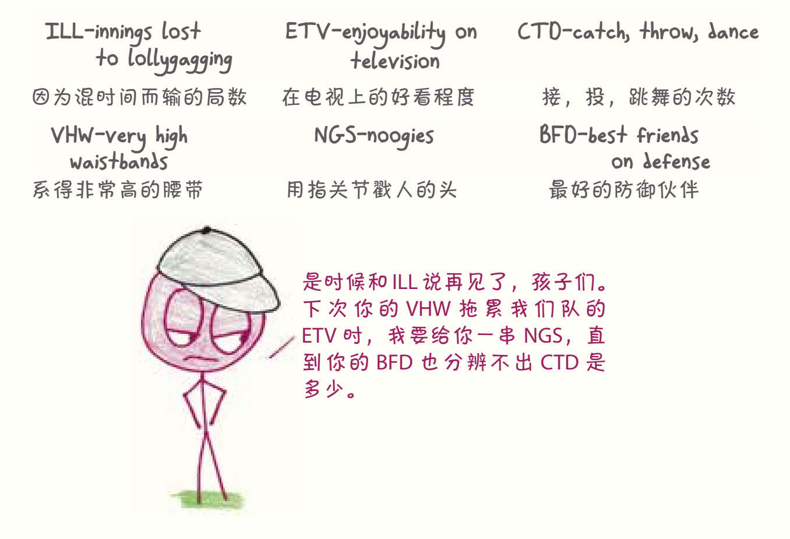
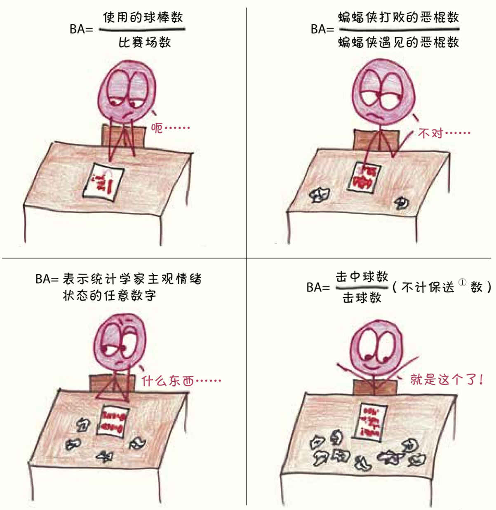
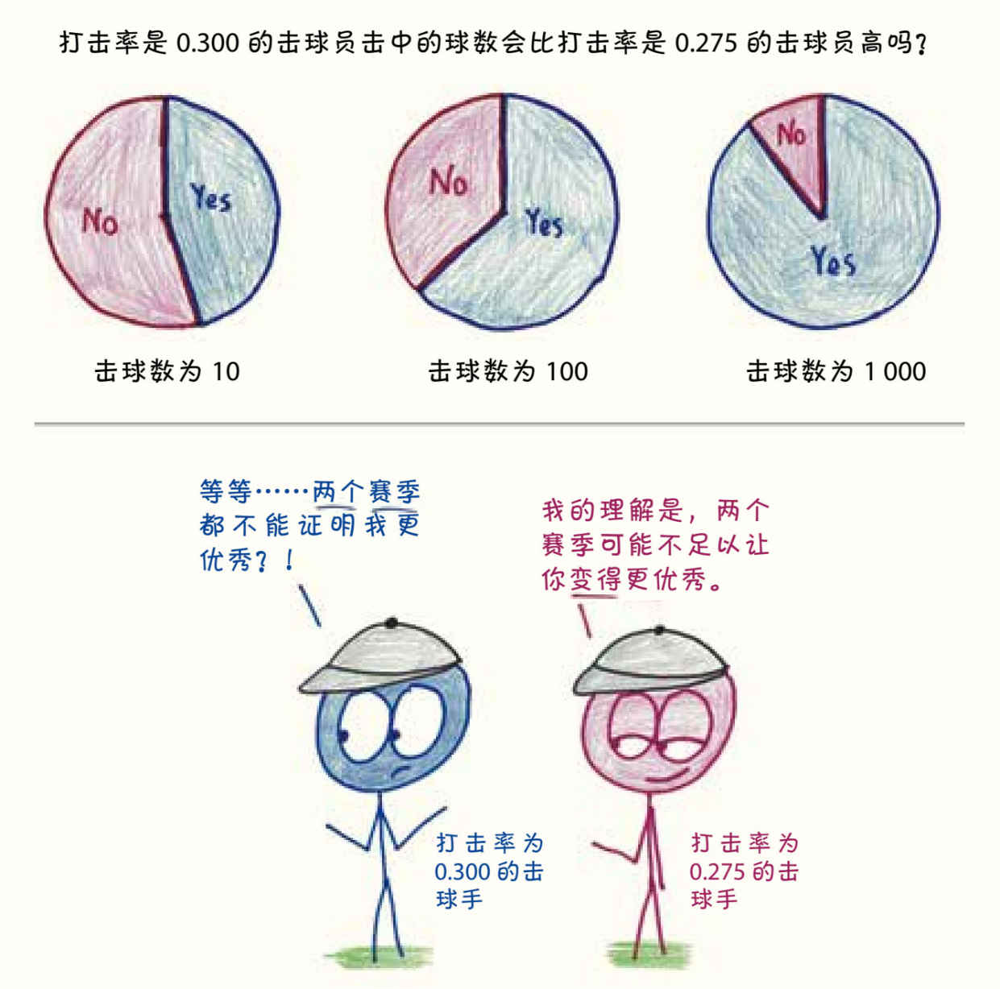
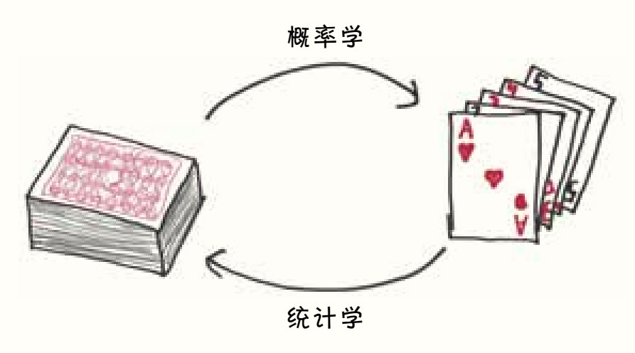
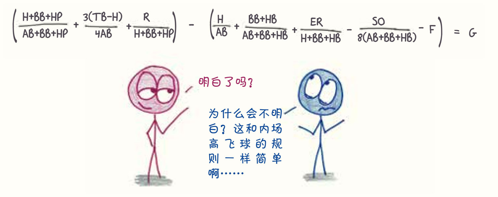
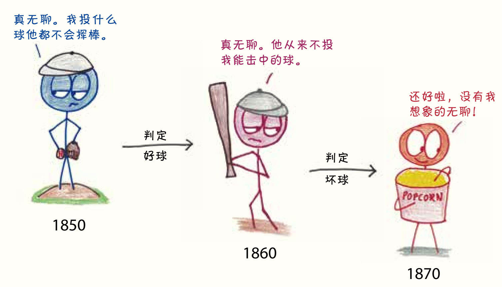
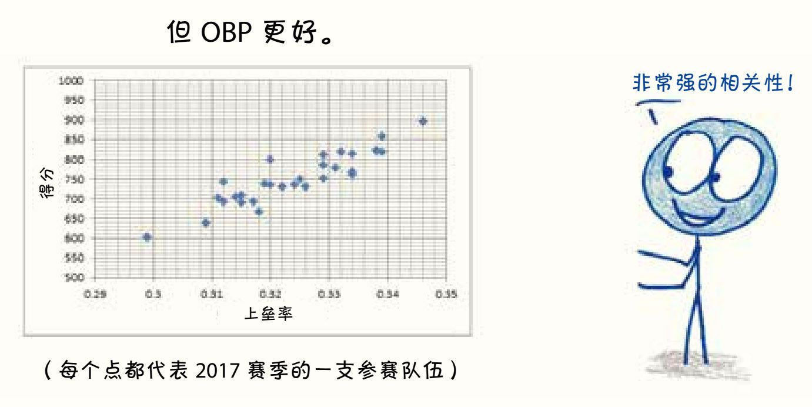
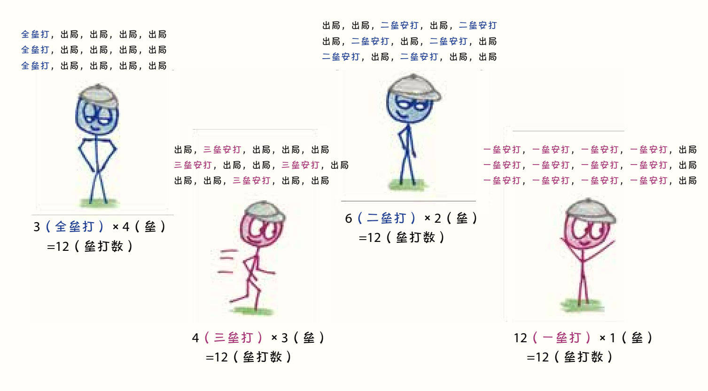
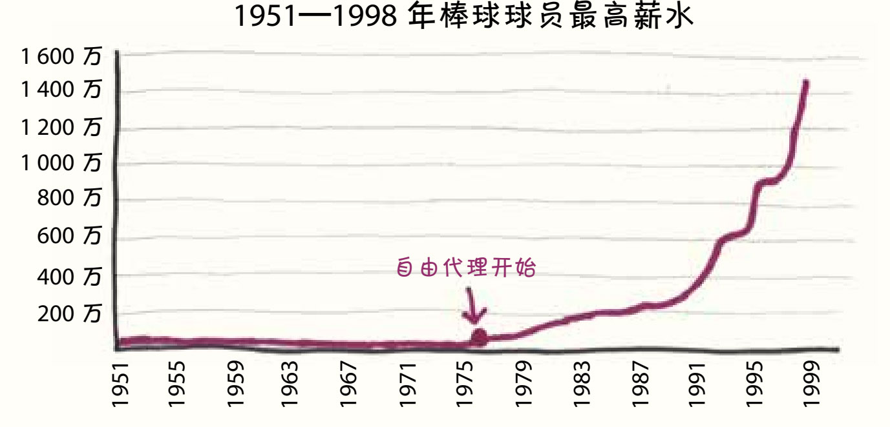
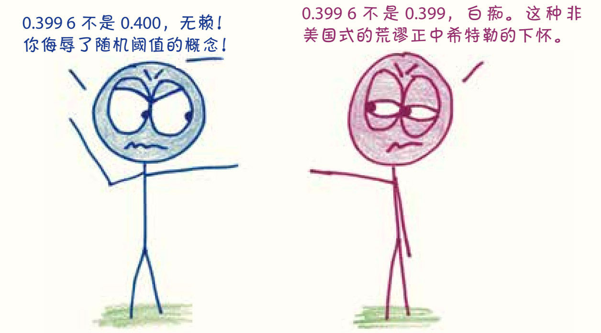

第17章
最后一位打击率0.400的传奇球员
打击率的兴衰
棒球自诞生以来就一直是一种数字游戏。在维基百科中，足足有122种棒球统计数据，从DICE（defense-independent component ERA(9)，纯粹防御率）到FIP（fielding independent pitching，不考虑守备的投球统计量），再到VORP（value over replacement player，替换球员比较值），但恐怕这些也不过是冰山一角。我怀疑在棒球中，任意三个随机字母都代表一种数据，都会有人对这些统计数据做了详细的记录。

本章只介绍一项统计数据，从它毫不起眼的诞生到逐渐式微的现状，都将在这一章详细探讨。这个数据就是BA——不是波士顿口音（Boston accents），也不是被吸收的啤酒（beer absorbed），而是打击率（batting average）。
打击率曾经是棒球场上最重要的数据指标，而今统计学家却认为它庸俗，不屑地把它看作野蛮时代的遗迹。打击率是否到了该退休的时候？还是说这个“腿脚不灵的老兵”身上仍闪烁着一丝有魔力的火花？
1. 表格中的闪电
1856年，来自英国的亨利·查德威克（Henry Chadwick）——一位《纽约时报》的板球记者，在一次偶然的情况下观看了棒球比赛，并迅速迷上了这项体育运动。“在棒球赛中，一切都如同闪电般具有冲击力。”1聊起棒球，他就滔滔不绝，只有板球球迷才能做到这一点。查德威克就像一只被乌龟的活力所吸引的树懒，很快就把自己的一生奉献给了这项美国人的消遣。他加入了棒球规则委员会，撰写了第一本关于这项运动的书，并编辑了第一份棒球年鉴。但是，查德威克之所以被誉为“棒球之父”，是因为一些更基本的东西：统计数据。
查德威克发明了“技术统计表”，这是一种用来追踪比赛关键事件的表格。通过浏览一栏栏数字——得分、击球数、出局数等，你几乎可以了解每一局比赛的进展。统计表里的数据与长期预测能力无关，但其中用数字讲述的故事却决定了球员得到的是荣誉还是责骂，被视为英雄还是恶棍。这些统计表记录了每场比赛的天气状况，突出了关键事件，在广播、动态摄影或职业棒球大联盟网站出现之前，提供了让人们了解赛况的途径，它们就是19世纪70年代的《体育中心报》。
查德威克关于“打击率”的灵感来自板球，板球只有两个垒，球员每次成功从一个垒到达另一个垒即得一分。板球运动员不停地击球，直到击球手出局为止，好的击球手在出局前能得好几十分（史上最高纪录是400分2）。
因此，板球的打击率被定义为“出局前平均得分”。一个优秀球员的“出局前平均得分”可以保持在50甚至60分。
然而，在棒球中，击球手本来就只需要击中一次球，所以这个定义并不能体现击球手的能力。查德威克像数学家一样仔细地研究了这些规则，在确定现在的打击率概念之前，先做了一些别的尝试。

①保送，让打者上垒的通称。包括四坏球（保送一垒）和触身球（保送一垒）。
打击率的设计初衷是用一个简单的分数来衡量成功率：安打(10)数除以安打数加出局数。查德威克称之为“衡量击球水平的真正标准”3。
尽管打击率的理论数值从0.000 （没有一次安打）到1.000（每次都安打）不等，但实际上，几乎所有球员的打击率都集中在0.200到0.350，这样的差距并不是很大。最强的棒球球员（打击率为0.300）和最弱的球员（打击率为0.275）在每40次尝试中只会有1次安打数的差距，肉眼是难以分辨他们的区别的。即使在整个赛季中，一个“较差”的球员完全可能靠运气胜过一个“较好”的球员。

因此，这时候就要依靠统计数据来分辨了。球员的打击率就像一段记录了植物从发芽到开花全过程的静态视频，它把超出感官察觉范围的真相告诉了我们。这不是瓶中闪电，而是表格中的闪电。
统计学就像概率一样，架起了两个世界的桥梁。在现实生活中，每一天的糟糕和幸运都是随机出现的。而在现实之外，还有一个有着稳定平均值和平稳趋势的长期天堂。概率从长期的世界开始，算计着某个事件可能在某一天发生。统计数据则正好相反，它从日常的混乱开始，努力推断数据那看不见的长期分布态势。
换句话来说，概率学家是对着一沓背面朝上的牌，描述可能抽到的牌；统计学家则是看着手中抽到的牌，试图推断那一沓牌的性质。

棒球为人们对击球结果的推断提供了足够的数据，这一点也许是体育运动中独一无二的。在每个有162场比赛的赛季中，一个击球手要面对大约24 000个投球。而其他的运动都几乎不可能提供同样丰富的数据，比如足球——除非在整个赛季中，每5秒就重新开球一次4。棒球更妙的地方在于，其他团队运动都是多人混战，但每个棒球运动员都单独击球，数据是独立而清晰的。
这是打击率的闪光点，但就像我们之前说的，每一种统计数据都会遗漏些什么——而在这一次，遗漏的信息是至关重要的。
2. 老人和上垒率
1952年，《生活》杂志刊载了海明威《老人与海》的初版5。这期杂志售出500万册，作者也因此获得了诺贝尔奖。
1954年8月2日，《生活》杂志选择将全国性的讨论引向另一个方向：棒球统计数据。匹兹堡海盗队总经理布兰奇·里奇（Branch Rickey）在题为《告别棒球旧观念》6的文章中提出了一个需要10页纸才能解开的方程式：

这个公式本身几乎不符合语法，其中的等号并不意味着“等于”，减号也不是真正的“减去”。尽管如此，这篇文章还是对一些以打击率为主的“过时棒球观念”进行了尖锐的批评和攻击。这段批评的主题[归功于里奇，但由加拿大统计学家艾伦·罗斯（Allan Roth）代笔]以两个字母开头：BB，意为“四坏球”（base on balls），更通俗地说，就是“保送”。
棒球运动在19世纪50年代逐渐成熟，当时在击中球或连续挥棒三次都击球失败之前，击球手都有击球的机会。如果击球手有足够的耐心，比赛的进程会像冷掉糖浆的流速一样缓慢。1858年，所谓的“好球”（called strikes）诞生了。7当击球手放弃击打看起来可能会被好好击中的球时，会被视为已经挥棒、算作失误。但此时钟摆摆得太远了，小心谨慎的投手不肯投出可以轻易被击中的球。对此，1863年提出的解决方案是将击球手认为太远而无法击中的球定义为“坏球”，当坏球足够多时8，击球手可以直接保送到一垒。

保送难倒了查德威克。在板球中，最接近“保送”的概念是“偏球”。偏球通常被认为是投球手的失误，所以在打击率的统计中，保送被直接忽略了。直到1910年，保送才被列入官方数据统计项目。9
在今天的棒球赛中，最熟练、最有耐心的击球手保送比例往往高达18%或19%10，而那些冲动鲁莽、轻易挥棒的同龄球员保送比例只有2%或3%11。因此，里奇方程的第一个参数是我们现在称为“上垒率”（on-base percentage，OBP）的复杂表达式。击球手的上垒率包括击球和保送的数据，换句话来说，就是“没有出局”的比例。
到底哪个统计数据更能预测一支球队的得分呢？是BA还是OBP？从2017年的数据来看，BA和球队得分的相关性不错，系数为0.73；但OBP和球队得分的相关性更强，系数为0.91。

接下来，里奇（也是罗斯）强调了打击率的另一个缺点。安打有四种情况，从一垒到四垒（全垒打），“垒”数越多，代表球员的水平越高，但打击率却不能分辨这四种情况。因此，里奇方程中第二项等于在“一垒”的基础上再加上超出的垒数。
今天，我们更喜欢用一个相关性的统计数据：长打率（SLG）。SLG计算的是每一棒的平均垒数，理论上数值最小为0.000，最大为4.000（每次都是全垒打）。但实际上，没有一个击球手能在整个赛季中击出超过1.000的成绩。
和打击率一样，SLG也忽略了保送，无视了不同垒数间重要的差别。例如，要在15次击球中击出0.800的成绩，垒打数就要达到12（因为12/15 = 0.8）。很多方式都能实现12的垒打数，但不同的方式反映出的球员水平完全不同：

由于OBP和SLG关注的是比赛的不同方面，人们经常将它们结合起来使用。最常见的用法是将二者直接相加，得到一个名为“上垒加长打率”（OPS）12的统计数据。在2017年的数据中，OPS与得分的相关性达到了惊人的0.935，比OBP或SLG都要好。
在《生活》杂志刊登《告别棒球旧观念》50周年之际13，《纽约时报》向纽约洋基队总经理布莱恩·凯许曼（Brian Cashman）展示了这个公式。凯许曼惊叹：“这家伙比他的时代超前了几十年。”他的赞美背后，反映的事实是：就算是洋基队的总经理，也没有读过那篇《告别棒球旧观念》。这也不难理解，为什么在那篇文章发表之后，打击率还在棒球数据中保持了几十年的统治地位，而OBP和SLG则无人问津，只能相互取暖。说起来，在《生活》杂志里，或许里奇的研究对棒球发展的影响还不如《老人与海》中关于棒球的对话14呢。
所以，棒球到底还在等什么？
3. 知识推动了曲线
任何事物的变革都有两个必要条件：知识和需求。
对棒球统计的变革而言，这些知识大部分来自作家比尔·詹姆斯。151977年，还是一名夜间保安的他自行出版了第一份《比尔·詹姆斯的棒球摘要》。这份68页的奇特文档主要由统计数据组成，严谨地回答了一系列诸如“哪位投手和接球手被盗垒最多？”的问题。尽管这本书当时的销量只有75本，但反响很好。第二年的新版本卖出了250本。五年后，詹姆斯和出版商签订了一份对棒球影响深远的出版协议。2006年，《时代周刊》将詹姆斯（此时他是波士顿红袜队的职员）评价为“地球上最有影响力的人之一”。
詹姆斯敏锐的分析方法引发了棒球界个人技术统计数据的复兴，他称之为“棒球统计学”。这个统计复兴运动的观点之一是，打击率只能作为展现实际结果的一个粗略指标16，仅用打击率评价球员就像只用一种原料来推断一顿晚餐的质量一样，不可能面面俱到。如果你真的想评估这顿饭，你需要品尝所有的食材——当然，更好的是，尝尝这道菜。
正如《生活》杂志的档案管理员可以证明的那样，这些知识都已被尘封了多年。把这些知识推到风口浪尖的不仅是詹姆斯，还有不断变化的棒球经济环境所带来的需求。直到20世纪70年代初，棒球运动员都生活在“保留条款”的阴影下。这就意味着，即使合同到期，球队仍然保留着对球员的所有权。除非得到老东家的许可，否则球员不能在其他任何地方签约（甚至连洽谈也不行）。
1975年，仲裁者重新定义了保留条款，开启了“自由代理”的时代。随着闸门打开，球员的薪水开始飙升。17

十年前，球队的老板可以像买杂货一样买球员。而这时，杂货店有了经纪人，这些经纪人都想赚更多的钱。新的财务压力本应促使老板们放弃BA这类粗糙的衡量标准，转而采用OBP和SLG等更可靠的数据，但众所周知，棒球是一项缓慢发展的运动（除了富有前瞻性的亨利·查德威克之外）。奥克兰运动家队花了20年的时间才认识到BA的问题，开始用OBP来评估球员。
20世纪90年代初，这些星星之火在奥克兰运动家队的总经理桑迪·奥尔德森（Sandy Alderson）和他的继任者比利·比恩（Billy Beane）的领导下，开始了燎原之势。很快，奥克兰运动家队通过聪明的统计在球员的购买上取得了惊人的成功。2003年，生活在旧金山的作家迈克尔·刘易斯写了一本关于比利·比恩的书。这本叫作《魔球》的书除了卖出成百上千万本之外，还做到了《生活》杂志无能为力的事——带领人们向一些过时的棒球理念“告别”。在刘易斯的帮助下，OBP和SLG从粉丝的自娱自乐一跃成为棒球运动的主流评价标准。
4. 小数点后4位的戏剧
著名的棒球球员泰德·威廉姆斯（Ted Williams）曾经说过：“棒球是最鼓励努力的领域，每个人尝试10次总能成功3次，而且会被认为表现得很好。”18
1941年，威廉姆斯准备冲击一个更高的目标：10次击球中有4次成功。这叫打击率0.400。这个数字能让他成为一个传奇。在赛季的最后一周到来前，威廉姆斯的成绩达到了0.406，有望成为11年来第一位打击率达到0.400的球员。
然而，之后他就没那么顺利了。在接下来的四场比赛里，在14次击球中，他只击中了3次，这就使他的打击率降到了令人心碎的0.3995519。
这个数字看起来有点儿假，仿佛是为了测试学生对小数的掌握程度而编造的数字，最后还会提问学生：它算是0.400吗？但就在第二天，主流报纸明确地给出了答案：不是0.400了。《纽约时报》的报道称：“威廉姆斯的打击率是0.3996。”《芝加哥论坛报》宣布：“威廉姆斯的打击率落到了0.400以下。”《费城问询报》则说得更残酷些：“威廉姆斯的打击率跌至0.399。”尽管这不符合四舍五入规则。同时威廉姆斯的家乡报纸《波士顿环球报》也附和了这一说法：“现在他的打击率只有0.399了。”
你说，我们怎么能拒绝一项对小数点后四位数字都如此认真的运动呢？

1941年的大论战
那个赛季的最后两场比赛都安排在9月28日。前一天晚上，威廉姆斯失眠了，他在费城街头徘徊了十多公里。据一位体育记者说，在第一场比赛之前，“他坐在板凳上咬指甲，双手颤抖着”。这位记者在后来的报道里描述：“第一次击球时，他抖得像一片树叶。”
但23岁的他坚持了下来。那天下午，他挥棒8次，击中了6次，打击率瞬时提高到0.4057。（头条新闻的作者毫不犹豫地称其为0.406。）从那以后，将近80年过去了，再也没有人的打击率能达到0.400。20
1856年，亨利·查德威克无意中观看了一场尘土飞扬的、激烈的棒球赛，就这样创造了用于衡量棒球赛标准的数字，这些数字赋予了棒球巨大的影响力。160多年后的今天，棒球已成为一个繁荣的行业，球队的工资总额高达数亿美元。在21世纪的棒球赛中，19世纪提出的打击率概念早就落后了，在面对更新换代的新型数据武器时，它就像一个试图赤手空拳接住强劲直球的小男孩。
尽管已经被时代淘汰，但0.400这个数字仍然保持着它神奇的魅力。每年的4月到5月，当一个新赛季才刚开始，样本量还小得像刚萌发的绿芽时，我们还是经常可以看到一两个球员的打击率在0.400的附近徘徊。尽管不久后，他们的数据就会掉下来，但就在那一周左右的时间里，这片大地上浮动着一丝希望的气息，人们能感觉到传说中BA为0.400的击球手是真实存在的。相较之下，OBP为0.500和SLG为0.800的数据永远不会这么让人心跳加速。我们喜欢0.400，不是因为它对比赛结果的预测能力，也不是因为它在数学上的优雅，而是因为它的吸引力，以及它用三位小数讲故事的方式——如果你想再精确一些，那就是四位小数。
或许未来再也不会有人能达到0.400的打击率，又或许明年就有人达到了。但威廉姆斯对此完全不介意，他在50年后说：“就算我早知道0.400是这么难达到的目标，我还是会努力实现的。”21